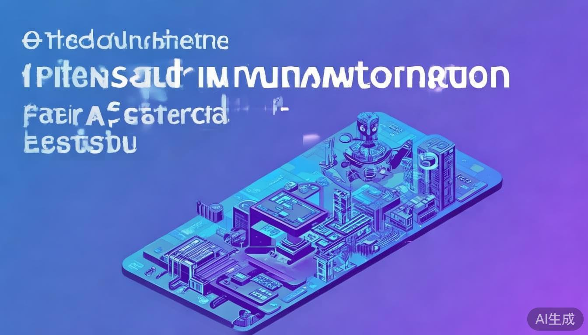

白驹 · 全局大脑 · 科学实验室
仿真模拟与开源工具指南
仿真 = 在电脑里"做实验"。工科里，先仿真后实物，能省大量成本与危险。本目录已有 5 个可直接跑的 Python 仿真 + 1 个测试。
一、本目录的仿真脚本
| 脚本 | 对应课程/知识点 |
|---|---|
01_pid_controller.py |
自动控制原理 · PID |
02_spring_mass_damper.py |
机械振动 · 二阶系统 |
03_projectile.py |
理论力学 · 抛体 |
04_rc_circuit.py |
电路 · 一阶暂态 |
05_monte_carlo.py |
概率统计 · 蒙特卡洛 |
06_single_pendulum.py |
理论力学 · 单摆（非线性） |
07_dc_motor.py |
电机/机电 · 电气+机械耦合 |
08_heat_equation.py |
传热 · 一维热传导（PDE 差分） |
09_lotka_volterra.py |
数学生态 · 捕食者-猎物 |
10_wave_equation.py |
偏微分 · 一维波动方程 |
test_simulation.py |
仿真测试（用理论值验证正确性） |
跑法：python 03_projectile.py；测试：pytest test_simulation.py -v。
看不懂代码？ 每个脚本都有逐行图文讲解 《仿真脚本图文讲解》：原理公式 + ASCII 示意图 + 代码逐段精讲 + 参数表 + 真实运行结果 + 避坑点（含欧拉法漂移、显式格式稳定性等实战经验）。
二、为什么要写"仿真测试"

仿真不是画个图就完事，必须用已知理论值去校验（例如抛体射程公式、RC 时间常数、π 值），否则仿真是错的都不知道。这就是"仿真测试"的意义——test_simulation.py 里每个断言都在核对物理公式。
三、开源仿真工具（免费，按领域选）
| 领域 | 工具 | 下载 |
|---|---|---|
| 电路仿真 | ngspice | ngspice.sourceforge.net |
| 电路仿真（免费闭源） | LTspice | analog.com |
| 数值计算（MATLAB 替代） | GNU Octave | octave.org |
| 数值计算 | Scilab | scilab.org |
| 多物理/系统建模 | OpenModelica | openmodelica.org |
| 机器人仿真 | Gazebo（+ ROS） | gazebosim.org |
| 电子设计 EDA | KiCad | kicad.org |
| 机器人/机械臂仿真 | CoppeliaSim | coppeliarobotics.com |
四、用 AI 辅助仿真
提示词示例：
请用纯 Python（不用 numpy）写一个单摆运动仿真：l=1m，初始角 30°，
用欧拉法积分，打印前 2 秒每 0.1 秒的角度，并与小角度近似周期 2π√(l/g) 对比验证。
核心心法：仿真四步——建模型 离散化（欧拉/龙格库塔） 数值积分 用理论值做测试验证。